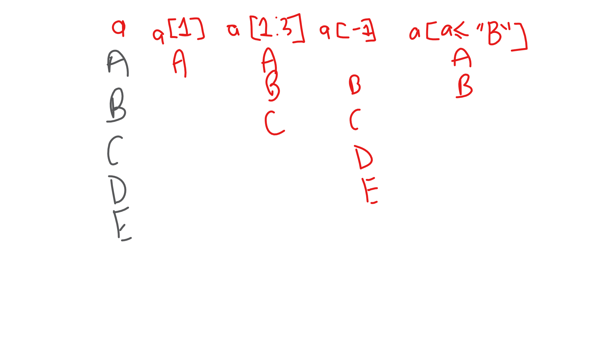

8 R data manipulation basics
8.1 Grid references
R works in a grid reference system like [row , column]. So…
- For a 1D vector, there’s just one position i.e.
vector[ row ] - For a data.frame, there’s two positions i.e.
data.frame[ row , column ]
8.2 Grid references


Valid values include:
- Positive values or ranges;
- Negative values or ranges;
- Boolean ranges;
- Names or vectors of names.
8.3 Grid referencing

8.4 Grid referencing vectors
LETTERS[1]
LETTERS[1:3]
LETTERS[-1]
LETTERS[-13:-1]
LETTERS[c(TRUE, FALSE)]## [1] "A"
## [1] "A" "B" "C"
## [1] "B" "C" "D" "E" "F" "G" "H" "I" "J" "K" "L" "M" "N" "O" "P" "Q" "R"
## [18] "S" "T" "U" "V" "W" "X" "Y" "Z"
## [1] "N" "O" "P" "Q" "R" "S" "T" "U" "V" "W" "X" "Y" "Z"
## [1] "A" "C" "E" "G" "I" "K" "M" "O" "Q" "S" "U" "W" "Y"8.5 Grid referencing data.frames
myDF <- data.frame(a = 1:3, b = 2:4, c = 3:5)
myDF[1, ]
myDF[, -1]
myDF[1, 1]
myDF[1:2, ]
myDF[c(TRUE, FALSE, TRUE), ]
myDF[, "a"]## a b c
## 1 1 2 3
## b c
## 1 2 3
## 2 3 4
## 3 4 5
## [1] 1
## a b c
## 1 1 2 3
## 2 2 3 4
## a b c
## 1 1 2 3
## 3 3 4 5
## [1] 1 2 38.5.1 Exercises
- Select all
lettersbefore “x”; - Select the first 5 rows from the built-in data.frame
iris; - Select the first 2 columns from
iris; - Select the column Sepal.Length from
irisby name.
8.6 Name-checking
Row names can be used to extract values.
myNamedVec <- c(red = "RED", blue = "BLUE")
myNamedVec["red"]## red
## "RED"Column names can also be referenced.
colnames(iris[, "Species"])
colnames(iris$Species)
colnames(iris[, c("Sepal.Width", "Species")])## NULL
## NULL
## [1] "Sepal.Width" "Species"8.7 Self-referencing
Useful for creating booleans, you can create a vector and use this inside your grid reference system.
LETTERS[LETTERS < "T"]
myDF[myDF$a <= 2, ]## [1] "A" "B" "C" "D" "E" "F" "G" "H" "I" "J" "K" "L" "M" "N" "O" "P" "Q"
## [18] "R" "S"
## a b c
## 1 1 2 3
## 2 2 3 48.7.1 Exercises
- Get all
lettersthat occur after “g”; - Select rows from the
irisdata.frame where theSepal.Lengthis greater than 5.8cm; - Select rows from the
irisdata.frame where the Sepal.Width is below the average for that column.
8.8 Updating
You can update part or all of simple objects by assigning new values against a grid-reference.
myVec <- LETTERS[1:3]
myVec[1] <- "Z"
myVec
myDF[1, ] <- 1:3
myDF## [1] "Z" "B" "C"
## a b c
## 1 1 2 3
## 2 2 3 4
## 3 3 4 58.9 Deleting
You can use the selections to remove values
myVec <- myVec[-2]
myVec
myDF <- myDF[-3, -1]
myDF## [1] "Z" "C"
## b c
## 1 2 3
## 2 3 48.9.1 Exercises
- Select everything from
irisexcept the Species column; - Create a copy of the
irisdata that just contains the first 100 rows and call itmyIris; - Update the species column to the value “Unknown” in
myIris; - Delete rows from
myIriswhere the sepal length is greater than 5.5.